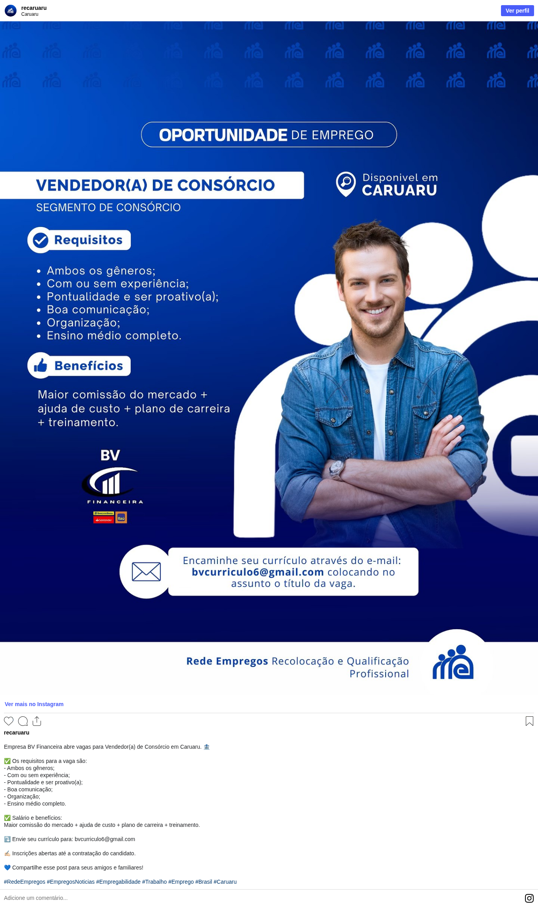

C7665ce2081 — instagram.com
https://www.instagram.com/p/DBPCKxyPjd3/
Prioridade: HIGH · Cenário: D_STRONG_IMPERSONATION · Revisão humana: PENDING
1. Decisão Consolidada
Justificativa
A publicação se apropria do nome da 'Empresa BV Financeira' para divulgar vagas de vendedor de consórcio, direcionando os interessados para um endereço @gmail.com não oficial. A conduta configura forte indício de personificação (impersonação) ou atuação irregular de promotora sem transparência regulatória, com risco direto à marca e ao consumidor. [Revisor: CONFIRM] A publicação e a peça gráfica em E-SHOT-FULL e E-TITLE divulgam vaga de 'Vendedor(a) de Consórcio' atribuída diretamente à 'Empresa BV Financeira', utilizando a marca estilizada da instituição juntamente com outras marcas bancárias, sem identificar nenhuma pessoa jurídica promotora, correspondente ou CNPJ, direcionando envios para e-mail genérico (bvcurriculo6@gmail.com). A conduta configura apropriação indevida da marca com grave risco de personificação e engano de candidatos/consumidores.
Limitações
- apenas a URL descoberta foi inspecionada; páginas internas, formulários e fluxos após cliques não foram acessados
- requisitos contratuais/internos não fornecidos: mapeamento limitado ao texto normativo
2. Screenshots


3. Catálogo de Evidências (Dados Brutos Observados)
| Ref | Tipo | Local | Conteúdo |
|---|---|---|---|
| E-URL | domain | url | URL final: https://www.instagram.com/p/DBPCKxyPjd3/ (domínio: www.instagram.com) |
| E-DISC-001 | text | search_index | Índice de busca (serper): Empresa BV Financeira abre vagas para Vendedor ... — Empresa BV Financeira abre vagas para Vendedor ... #Oportunidade | Hospital Mestre Vitalino abre processo seletivo para Assistente Administrativo ... |
| E-SHOT-VIEWPORT | screenshot | viewport | evidence/C7665ce2081/attempt-1/viewport.png (sha256 d4b89f9eddc4f7f7…) |
| E-SHOT-FULL | screenshot | page | evidence/C7665ce2081/attempt-1/fullpage.png (sha256 89d4cff9a5a1e8c6…) |
| E-TITLE | title | head | Instagram @recaruaru - recaruaru Empresa BV Financeira abre vagas para Vendedor(a) de Consórcio em Caruaru. 🏦 ✅ Os requisitos para a vaga são: - Ambos os gêneros; - Com ou sem experiência; - Pontualidade e ser proativo(a); - Boa comunicação; - Organização; - Ensino médio completo. ✅ Salário e benefícios: Maior comissão do mercado + ajuda de custo + plano de carreira + treinamento. ⤵️ Envie seu currículo para: bvcurriculo6@gmail.com ✍🏻 Inscrições abertas até a contratação do candidato. 💙 Compa |
| E-FOLD | text | viewport (acima da dobra) | recaruaru Caruaru Ver perfil |
| E-CONTACT-1 | contact | page | <https://www.instagram.com/recaruaru/?utm_source=ig_embed&ig_rid=Aq8B4lImwuF3opuwRVsD_lD> |
| E-CONTACT-2 | contact | page | recaruaru <https://www.instagram.com/recaruaru/?utm_source=ig_embed&ig_rid=Aq8B4lImwuF3opuwRVsD_lD> |
| E-CONTACT-3 | contact | page | Caruaru <https://www.instagram.com/explore/locations/1956735/caruaru/?utm_source=ig_embed&ig_rid=Aq8B4lImwuF3opuwRVsD_lD> |
| E-CONTACT-4 | contact | page | Ver perfil <https://www.instagram.com/recaruaru/?utm_source=ig_embed&ig_rid=Aq8B4lImwuF3opuwRVsD_lD> |
| E-CONTACT-5 | contact | page | <https://www.instagram.com/p/DBPCKxyPjd3/?utm_source=ig_embed&ig_rid=Aq8B4lImwuF3opuwRVsD_lD> |
| E-CONTACT-6 | contact | page | recaruaru 1.598 posts · 54K seguidores <https://www.instagram.com/recaruaru/?utm_source=ig_embed&ig_rid=Aq8B4lImwuF3opuwRVsD_lD> |
| E-CONTACT-7 | contact | page | Ver mais no Instagram <https://www.instagram.com/recaruaru/?utm_source=ig_embed&ig_rid=Aq8B4lImwuF3opuwRVsD_lD> |
| E-CONTACT-8 | contact | page | Curtir <https://www.instagram.com/p/DBPCKxyPjd3/?utm_source=ig_embed&ig_rid=Aq8B4lImwuF3opuwRVsD_lD> |
| E-CONTACT-9 | contact | page | Comentar <https://www.instagram.com/p/DBPCKxyPjd3/?utm_source=ig_embed&ig_rid=Aq8B4lImwuF3opuwRVsD_lD> |
| E-CONTACT-10 | contact | page | Compartilhar <https://www.instagram.com/p/DBPCKxyPjd3/?utm_source=ig_embed&ig_rid=Aq8B4lImwuF3opuwRVsD_lD> |
| E-CONTACT-11 | contact | page | Salvar <https://www.instagram.com/p/DBPCKxyPjd3/?utm_source=ig_embed&ig_rid=Aq8B4lImwuF3opuwRVsD_lD> |
| E-CONTACT-12 | contact | page | recaruaru <https://www.instagram.com/recaruaru/?utm_source=ig_embed&ig_rid=Aq8B4lImwuF3opuwRVsD_lD> |
| E-CONTACT-13 | contact | page | #RedeEmpregos <https://www.instagram.com/explore/tags/RedeEmpregos/?utm_source=ig_embed> |
| E-CONTACT-14 | contact | page | #EmpregosNoticias <https://www.instagram.com/explore/tags/EmpregosNoticias/?utm_source=ig_embed> |
| E-CONTACT-15 | contact | page | #Empregabilidade <https://www.instagram.com/explore/tags/Empregabilidade/?utm_source=ig_embed> |
| E-CONTACT-16 | contact | page | #Trabalho <https://www.instagram.com/explore/tags/Trabalho/?utm_source=ig_embed> |
| E-CONTACT-17 | contact | page | #Emprego <https://www.instagram.com/explore/tags/Emprego/?utm_source=ig_embed> |
| E-CONTACT-18 | contact | page | #Brasil <https://www.instagram.com/explore/tags/Brasil/?utm_source=ig_embed> |
| E-CONTACT-19 | contact | page | #Caruaru <https://www.instagram.com/explore/tags/Caruaru/?utm_source=ig_embed> |
| E-CONTACT-20 | contact | page | Adicione um comentário... <https://www.instagram.com/p/DBPCKxyPjd3/?utm_source=ig_embed&ig_rid=Aq8B4lImwuF3opuwRVsD_lD> |
| E-IMG-1 | image | page (acima da dobra) | imagem alt='Post do Instagram compartilhado por @recaruaru' src=https://instagram.fcgh22-1.fna.fbcdn.net/v/t51.82787-15/637699081_18434119153119727_8254804941242462085_n.jpg?stp=dst-jpg_e35_tt6&_nc_cat=102&_nc_map=urlgen_bucketless&ig_cache_key=MzQ4MTAxMDU3MzcyNDc (1366x1708, acima da dobra) |
| E-TXT-001 | text | page | Empresa BV Financeira abre vagas para Vendedor(a) de Consórcio em Caruaru. 🏦 |
4. Análise de Marca (gemini-3.8-flash, brand-analyst/v5)
Dimensões Avaliadas
| Dimensão | Sinal | Achado | Refs |
|---|---|---|---|
| DECLARED_COMMERCIAL_IDENTITY | CONFUSION | O anúncio divulga vaga de emprego em nome direto da 'Empresa BV Financeira' sem qualquer transparência quanto à real empresa empregadora. | E-TITLE E-TXT-001 E-SHOT-FULL |
| CORRESPONDENT_TRANSPARENCY | CONFUSION | Não há menção à condição de correspondente bancário, inexistindo razão social, CNPJ ou identificação clara de intermediação. | E-TXT-001 E-SHOT-FULL |
| CONTACT_CHANNELS | CONFUSION | Canal de contato e coleta de dados é um e-mail pessoal/gratuito (@gmail.com) usando a sigla BV no prefixo. | E-TITLE E-SHOT-FULL |
| LOGO_USAGE | CONFUSION | Uso da marca e denominação 'BV Financeira' sem governança do conglomerado financeiro. | E-SHOT-FULL |
| CONSUMER_CONFUSION | CONFUSION | Induz o público a crer que se trata de contratação direta pela BV Financeira para comercialização de consórcios. | E-TITLE E-TXT-001 E-SHOT-FULL |
Indícios de Confusão
- [HIGH] DECLARED_COMMERCIAL_IDENTITY: A publicação se apresenta diretamente como 'Empresa BV Financeira' sem identificar nenhuma razão social ou CNPJ de empresa terceira ou correspondente bancário responsável. — E-TITLE E-TXT-001 E-SHOT-FULL
- [HIGH] CONTACT_CHANNELS: Utilização de endereço de e-mail gratuito genérico (bvcurriculo6@gmail.com) para recebimento de dados/currículos simulando canal de contratação da instituição financeira. — E-TITLE E-SHOT-FULL
- [HIGH] LOGO_USAGE: Utilização do nome e marca estilizada 'BV Financeira' na arte gráfica do anúncio, acoplada a logotipos de outras instituições financeiras (Banco do Brasil, Santander, Itaú). — E-SHOT-FULL
- [HIGH] CORRESPONDENT_TRANSPARENCY: Ausência total de declaração de correspondente bancário independente ou identificação da entidade promotora de crédito/consórcio, contrariando a Res. CMN nº 4.935/2021. — E-TITLE E-TXT-001 E-SHOT-FULL
- [HIGH] CONSUMER_CONFUSION: A apropriação do nome institucional BV Financeira em oferta de vaga com e-mail não oficial gera grave confusão e risco de engenharia social/captação indevida de dados cadastrais. — E-TITLE E-TXT-001 E-SHOT-FULL
Indícios de Relação Legítima
- Nenhum
Fatos Observados
- Postagem na conta de Instagram @recaruaru anunciando 'Empresa BV Financeira abre vagas para Vendedor(a) de Consórcio em Caruaru'.
- A arte gráfica no screenshot completo exibe o nome 'BV FINANCEIRA' acompanhado de ícone gráfico e miniaturas dos logotipos de Banco do Brasil, Santander e Itaú.
- O canal de envio de currículo informado é o endereço de e-mail 'bvcurriculo6@gmail.com'.
- Não há indicação de razão social, CNPJ, vínculo formal de correspondente ou relação jurídica com o Banco BV.
Incertezas
- Não é possível determinar se a vaga é originária de uma promotora de crédito/consórcio local que atua de forma irregular ou se trata de golpe de falso emprego/coleta de dados.
Síntese do Analista
A publicação se apropria do nome da 'Empresa BV Financeira' para divulgar vagas de vendedor de consórcio, direcionando os interessados para um endereço @gmail.com não oficial. A conduta configura forte indício de personificação (impersonação) ou atuação irregular de promotora sem transparência regulatória, com risco direto à marca e ao consumidor.
5. Identidade do Responsável
social:instagram.com:recaruaru
Nenhum CNPJ ou razão social identificáveis no conteúdo coletado.
Fatos Observados
| Tipo | Valor | Ref | Contexto |
|---|---|---|---|
| domain | instagram.com | E-URL | |
| social_profile | https://www.instagram.com/p/DBPCKxyPjd3/ | E-URL | |
| bvcurriculo6@gmail.com | E-TITLE | ||
| social_profile | https://www.instagram.com/recaruaru/?utm_source=ig_embed&ig_rid=Aq8B4lImwuF3opuwRVsD_lD | E-CONTACT-1 | |
| social_profile | https://www.instagram.com/explore/locations/1956735/caruaru/?utm_source=ig_embed&ig_rid=Aq8B4lImwuF3opuwRVsD_lD | E-CONTACT-3 | |
| social_profile | https://www.instagram.com/p/DBPCKxyPjd3/?utm_source=ig_embed&ig_rid=Aq8B4lImwuF3opuwRVsD_lD | E-CONTACT-5 | |
| social_profile | https://www.instagram.com/explore/tags/RedeEmpregos/?utm_source=ig_embed | E-CONTACT-13 | |
| social_profile | https://www.instagram.com/explore/tags/EmpregosNoticias/?utm_source=ig_embed | E-CONTACT-14 | |
| social_profile | https://www.instagram.com/explore/tags/Empregabilidade/?utm_source=ig_embed | E-CONTACT-15 | |
| social_profile | https://www.instagram.com/explore/tags/Trabalho/?utm_source=ig_embed | E-CONTACT-16 | |
| social_profile | https://www.instagram.com/explore/tags/Emprego/?utm_source=ig_embed | E-CONTACT-17 | |
| social_profile | https://www.instagram.com/explore/tags/Brasil/?utm_source=ig_embed | E-CONTACT-18 | |
| social_profile | https://www.instagram.com/explore/tags/Caruaru/?utm_source=ig_embed | E-CONTACT-19 | |
| trade_name | @recaruaru | E-TITLE |
Inferências de Associação (Não são Fatos)
- base da associação: perfil em rede social
6. Mapeamento de Conformidade (Hipóteses)
Mapeamento indicativo para apoio à auditoria. Não constitui conclusão regulatória; a decisão definitiva pertence à auditoria.
Res. CMN 4.935/2021, art. 14, inciso II — NOT_APPLICABLE_UNLESS_COBAN
Fonte: NORMATIVE
Art. 14. O contrato de correspondente deve estabelecer: [...] II - vedação à utilização, pelo contratado, de logomarca ou de outros atributos que sejam similares aos adotados pela instituição contratante em suas agências, postos de atendimento, sítio eletrônico na internet, aplicativo ou outras plataformas de comunicação em rede;
Hipótese: Uso de logomarca, uso excessivo/desproporcional ou de atributos similares aos adotados pela contratante em seus canais. A norma disciplina correspondentes contratados; o responsável não foi identificado como correspondente.
Evidência observada: E-SHOT-FULL
Informação faltante:
- confirmar se o responsável é correspondente contratado (relação pública da contratante — art. 21 — ou base interna)
Res. CMN 4.935/2021, art. 14, inciso III, alíneas a e b — NOT_APPLICABLE_UNLESS_COBAN
Fonte: NORMATIVE
Art. 14. O contrato de correspondente deve estabelecer: [...] III - divulgação ao público, pelo contratado, de sua condição de prestador de serviços à instituição contratante, identificada pelo nome com que é conhecida no mercado, com descrição dos produtos e serviços oferecidos e canais de contato da instituição contratante, inclusive de sua ouvidoria, em local visível, em destaque e em formato legível, por meio de: a) sítio eletrônico do correspondente na internet, acessível na página inicial; b) aplicativo e outras plataformas de comunicação em rede do correspondente; [...]
Hipótese: Divulgação ao público da condição de prestador de serviços/parceria ausente, insuficiente, ambígua ou sem destaque. A norma disciplina correspondentes contratados; o responsável não foi identificado como correspondente.
Evidência observada: E-SHOT-FULL E-TITLE E-TXT-001
Informação faltante:
- confirmar se o responsável é correspondente contratado (relação pública da contratante — art. 21 — ou base interna)
- canais de contato/ouvidoria da contratante não observados no material coletado (podem existir em páginas não inspecionadas)
Res. CMN 4.935/2021, art. 3º — NOT_APPLICABLE_UNLESS_COBAN
Fonte: NORMATIVE
Art. 3º O correspondente atua por conta e sob as diretrizes da instituição contratante, que assume inteira responsabilidade pelo atendimento prestado aos clientes e usuários por meio do contratado.
Hipótese: Atendimento ao público prestado por meio do contratado em condições que podem não seguir as diretrizes da contratante. A norma disciplina correspondentes contratados; o responsável não foi identificado como correspondente.
Evidência observada: E-SHOT-FULL E-TITLE
Informação faltante:
- confirmar se o responsável é correspondente contratado (relação pública da contratante — art. 21 — ou base interna)
Se o responsável não for correspondente contratado, os indícios podem caracterizar uso indevido de marca ou fraude, fora do escopo da Res. 4.935: avaliar encaminhamento às áreas jurídica/segurança.
Limitações: requisitos contratuais/internos não fornecidos: mapeamento limitado ao texto normativo
7. Revisão Crítica (gemini-3.8-flash)
Decisão: CONFIRM → STRONG_INDICATION / HIGH
A publicação e a peça gráfica em E-SHOT-FULL e E-TITLE divulgam vaga de 'Vendedor(a) de Consórcio' atribuída diretamente à 'Empresa BV Financeira', utilizando a marca estilizada da instituição juntamente com outras marcas bancárias, sem identificar nenhuma pessoa jurídica promotora, correspondente ou CNPJ, direcionando envios para e-mail genérico (bvcurriculo6@gmail.com). A conduta configura apropriação indevida da marca com grave risco de personificação e engano de candidatos/consumidores.
| Tema | Severidade | Questionamento | Refs |
|---|---|---|---|
| domain_attribution | MEDIUM | Responsável pela página não identificado; a conclusão sobre a marca não pode ser atribuída a um estabelecimento específico. | E-URL |
8. Origem da Descoberta
| Fonte | Consulta / hipótese | URL original | Título / trecho |
|---|---|---|---|
| serper | (vagas OR "trabalhe conosco" OR "processo seletivo" OR "renda extra" OR "home office") ("Banco BV" OR "bv financeira") (correspondente OR promotora OR digitador OR vendedor OR comissão) -site:bv.com.br -site:bancobv.com.br -site:bvfinanceira.com.br -site:bvinvestimentos.com.br -site:napista.com.br -site:bvopen.com.br -site:meufinanciamentosolar.com.br -site:votorantim.com.br -site:vam.com.br -site:reclameaqui.com.br -site:jusbrasil.com.br -site:jus.br H10-fraud:vagas | https://www.instagram.com/p/DBPCKxyPjd3/ | Empresa BV Financeira abre vagas para Vendedor ... Empresa BV Financeira abre vagas para Vendedor ... #Oportunidade | Hospital Mestre Vitalino abre processo seletivo para Assistente Administrativo ... |
9. Cadeia de Custódia da Coleta
sha256 4093a169ded72f043a13a6da81b5164c8bd7f0aa052a7f9ced97e86be47633c2
Original: https://www.instagram.com/p/DBPCKxyPjd3/
Final: https://www.instagram.com/p/DBPCKxyPjd3/
| Artefato | Caminho | SHA-256 | Bytes |
|---|---|---|---|
| screenshot_viewport | evidence/C7665ce2081/attempt-1/viewport.png | d4b89f9eddc4f7f7520ddbd09de6f7ed8191ade73db79095a8d2e96b67203d54 | 741840 |
| screenshot_full | evidence/C7665ce2081/attempt-1/fullpage.png | 89d4cff9a5a1e8c6a354a550d26144f269c291a4ada5bc7a4decf1e2cc7b7f85 | 1596000 |
| html | evidence/C7665ce2081/attempt-1/page.html.txt | 95bde84dea37ce52eb85903daec37bf94b4bccb3ea015045f8576fefd488d826 | 216861 |
| text | evidence/C7665ce2081/attempt-1/text.txt | f696460435e24eea743b3a750f03b6610de1f082925e855e17e39c618d527623 | 861 |
| page_data | evidence/C7665ce2081/attempt-1/page.json | 83610e58e443d5c24e271a12d46c595c5e8e5d5ea0e235ffb17208dbb11ce126 | 12190 |
Ocorrências e conteúdo não inspecionado
- apenas a URL descoberta foi inspecionada; páginas internas, formulários e fluxos após cliques não foram acessados
10. Histórico de Estados
| Quando | De | Para | Nota |
|---|---|---|---|
| 2026-11-25T18:12:05+00:00 | DISCOVERED | QUEUED | prioritised (score 2.0) |
| 2026-11-25T18:39:38+00:00 | QUEUED | COLLECTING | |
| 2026-11-25T18:39:43+00:00 | COLLECTING | COLLECTED | |
| 2026-11-25T18:39:43+00:00 | COLLECTED | ANALYZING | |
| 2026-11-25T18:40:04+00:00 | ANALYZING | REVIEWING | |
| 2026-11-25T18:40:12+00:00 | REVIEWING | COMPLETED |